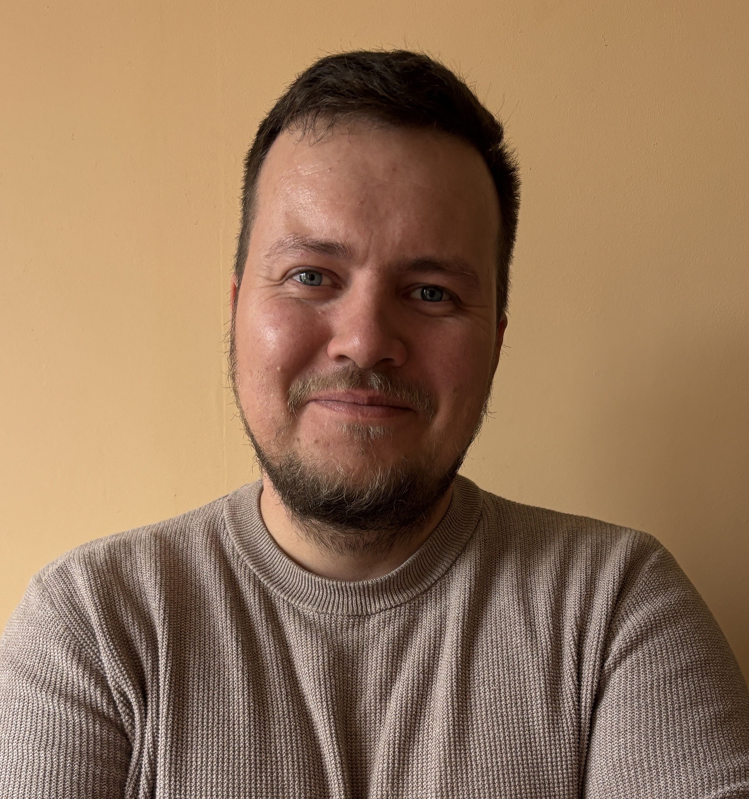

"Izglītība nav mainījusies cilvēces vēstures attīstības laikā, tāpat kā ritenis nav mainījies - maināmies mēs paši."
Siguldas pilsētas vidusskolā strādā no 2011.gada
Intervētāja Anna Kohņuka
Kāds bija jūsu ceļš līdz darbam skolā, un kā jūs nonācāt līdz šai profesijai?
Faktiski bija tā, ka pēc studijām ārzemēs strādāju valsts pārvaldē. Vienā brīdī, zinot, ka studēšu Somijā, aizgāju no darba. Aizbraucu studēt uz Somiju un ļoti priecīgs atgriezos. Savus jaunības gadus biju plānojis pavadīt diezgan laiski, bet man bija paziņa, kura tolaik darbojās organizācijā "Iespējamā misija". Viņa mani izaicināja, sakot, ka es neizturēšu atlasi šai programmai. "Iespējamā misija" ir programma ar starptautisku pieredzi, kas dažādu jomu profesionāļus atbalsta un palīdz sagatavot darbam skolā. Es izturēju atlasi kā "Iespējamās misijas" ceturtā iesaukuma dalībnieks un 2011. gada augustā, kad skola tika izveidota, nokļuvu šeit.
Bet kāpēc tieši par fizikas skolotāju?
Es sāku kā sociālo zinību un vēstures skolotājs. Laika gaitā mēs skolā sākām daudzus projektus saistībā ar digitalizāciju un tehnoloģiju izmantošanu. Paralēli Jaunrades centrā vadīju elektronikas pulciņu jauniešiem, tādēļ, mērķtiecīgi apgūstot nepieciešamās zināšanas, es virzījos prom no sociālās jomas uz tehnoloģijām, dabaszinībām un fiziku.
Kā, jūsuprāt, fizikas mācīšana ir mainījusies salīdzinājumā ar agrākiem laikiem, tieši vērtējot skolēnus?
Skolēnu ziņā nekas būtiski nav mainījies, taču pēdējos gados māca tieši dabaszinību kursu. Fizika mainās līdz ar jauniem atklājumiem, bet saturiski daudzas fundamentālas lietas paliek nemainīgas. Skolēni bieži uzskata, ka matemātika nav domāta viņiem. Fizika būvējas uz ļoti būtiskiem pamatiem un pamatprasmēm. Ja es nemāku rakstīt vai lasīt, es nevaru mācīties neko citu. Mēs ļoti daudz strādājam nevis ar pašu saturu, bet ar elementārām pamatlietām. Tas vienmēr ir bijis sarežģītākais - pārliecināt un iemācīt pamatlietas. Es negribētu teikt, ka skolēni ir mainījušies. Varbūt tagad ir pieejams vairāk informācijas un iespēju, kas cilvēkos rada apjukumu vai nevēlēšanos izvēlēties būtību.
Bet vai skolēnu attieksme tieši pret mācību priekšmetu ir mainījusies?
Vienmēr ir bijis tā, ka kādam patīk, kādam nepatīk; kāds priecājas, kāds skumst, kādam ir salauzta sirds. Ja kādam patīk priekšmets, tas bieži ir tāpēc, ka patīk skolotājs, un otrādi. Tā tas vienmēr ir bijis un būs. Mūsu uzdevums skolā nav patikt vai nepatikt, būt mīlētiem vai ienīstiem. Uzdevums ir kopīgi mācīties un rast ceļus, tādēļ šajā ziņā viss ir kā parasti.
Vai jums ir darbs arī ārpus skolas? Ja jā, kā jūs apvienojat dažādos pienākumus?
Šogad skolā esmu pirmdienās uz otro un trešo stundu, otrdienās vadu robotiku, bet trešdienās esmu skolā no rīta un vadu dabaszinību kursu - tā nav pilnas slodzes darba vieta. Mans pamatdarbs ir Siguldas novada Digitālā centra direktora amats, kur mani pienākumi ir saistīti ar IT un operatīvo komunikāciju Siguldas novada pašvaldībā. Kā to apvienot? Tāpat kā šodien - ja skolā ir kontroldarbs, tad no rīta sešos tas ir jāpārskata un jāsagatavo. Tas prasa laiku un darbu.
Tātad sanāk, ka tas īsti neietekmē darba kvalitāti un visu var apvienot?
Ir reizes, kad stundas izkrīt. Man patīk, ja skolēni prot strādāt patstāvīgi - ja viņiem uzdod uzdevumu un viņi to spēj izdarīt. Ja ir jautājumi, es sniedzu atbalstu, bet spēja strādāt pašam liecina par to, ka vidusskolas posmā viņi ir pietiekami pieauguši. Šajā sezonā esmu izlaidis tikai divas dienas.
Kādas ir lielākās atšķirības starp skolotāja darbu agrāk un tagad jūsu pieredzē? Vai tiešām nekas nav mainījies?
Es domāju, ka tas ir kā ar riteni - tas ir mans mīļākais piemērs. Izglītība cilvēces vēsturē savābūtībā nav mainījusies, tāpat kā ritenis. Ritenim joprojām ir divi riteņi un pedāļi. Tas, kas mainās, esam mēs paši. Mēs nopērkam mīkstāku sēdekli, uzliekam spidometru, pieliekam gaismiņas. Arī izglītībā fundamentālais mērķis, piemēram, fizikas mācīšanā, nav mainījies. Mainījušās ir iespējas, kā mēs varam komunicēt un pasniegt vielu. Ir vairāk metožu un variantu, kā skolēni var mācīties. Šobrīd, mākslīgā intelekta laikā, varbūt ir pat vieglāk pajautāt tam, lai tas izskaidro vielu, bet tas rada citas problēmas - neviens nelasa to, ko mākslīgais intelekts izskaidro. Jēga un būtība nav mainījusies. Trakākais mūsu situācijā ir tas, ko dara daudzi pedagogi. Es šajā jautājumā vienmēr esmu bijis strikts, kas atspoguļojas tajā, kā es mācu un komunicēju ar skolēniem. Tas ir pieņēmums, ka skolēni nav spējīgi paši pieņemt lēmumus. Manuprāt, tā ir lielākā muļķība. Gan pedagogi, gan vecāki bieži pāraprūpē jauniešus. Vidusskolā bērns ir pilngadīgs, bet viņam apkārt ir pieci pieaugušie, kas viņa vietā pieņem lēmumus, lai gan viņam pašam būtu jāizmanto savas iespējas.
Vai varat pastāstīt par kādu īpaši spilgtu vai atmiņā paliekošu pieredzi savā darbā? Varbūt kādu smieklīgu brīdi?
Smiekli ir katru dienu, tādēļ ir grūti izdalīt pašu smieklīgāko gadījumu. Interesantākā un reizē emocionālākā pieredze man bija pirmā audzināmā klase, ko es saucu par "mežonīgo duci". Tie bija jaunieši, kurus audzināju no mazotnes līdz pat vidusskolas beigām. Tas bija ļoti emocionāls laiks. Kopš tā laika man ir bijušas arī citas audzināmās klases.
SĀKUMS